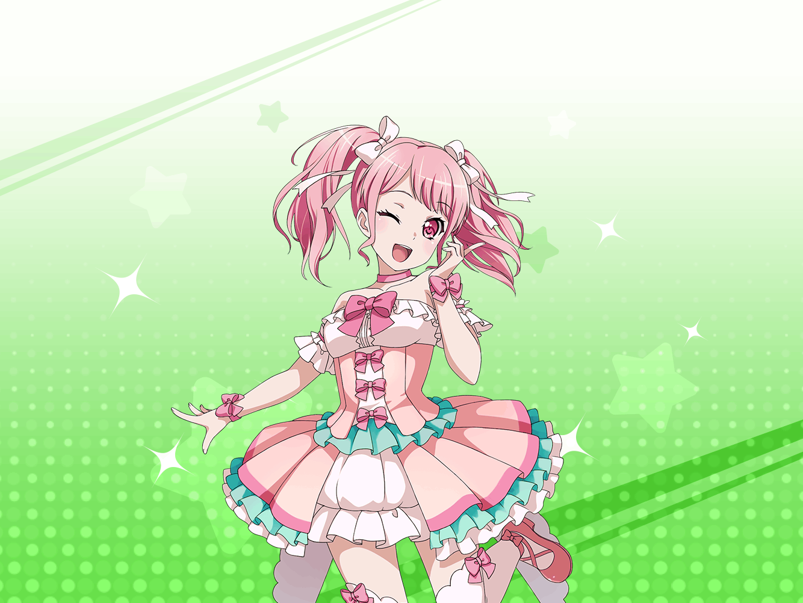

彩
おはようございまーす！
彩
……って、あれ？
まだ誰も来てないや。
さすがに来るのが早すぎたかな？
彩
……それなら
彩
えへへ、こっそり持ってきちゃったけど
やっぱりこのバンド衣装可愛いな～
彩
色も綺麗だし、スカートもふわふわだし、
まさにアイドルって感じ！
彩
そうだ、せっかくだし、
アレもやってみよう！
彩
……コホンッ。
みんな～！ 来てくれてありがと～！
それじゃあ、いつものアイドルポーズいっくよ～！
彩
きらーんっ☆
彩
……なーんちゃってっ
日菜
……彩ちゃん、何してるの？
彩
きゃああああああ～！？
ひ、日菜ちゃん、いつから見てたの！？
日菜
『やっぱりこの衣装可愛いなー』
っていうとこから、かなー？
彩
それ着替え終わってすぐだよね！？
言ってくれればいいのに……！
日菜
んー、だって楽しそうだったし。
邪魔するのも悪いかなーって
日菜
それにまた変なポーズしてたし
彩
へ、変なポーズじゃないよっ
日菜
うーん。
じゃあ、参考にならないポーズ
彩
うぅ……ひどい……
日菜
でも、彩ちゃん、
なんで衣装なんて着てるのー？
今日の練習って私服でよかったはずだよね？？
彩
え、それは、その……嬉しくて……
彩
私、ずっとアイドルになるのが夢だったから、
この衣装をもらえたとき、すっごく嬉しかったの！
彩
これで私も、憧れのアイドルなんだなって！
彩
だから家でも、ずーっと眺めたり、
実際に着ちゃったりしてたんだけど……
彩
そうしたら、もうワクワクが止まらなくなっちゃって！
家以外でも着てみたいなーって、
ついスタジオまで持ってきちゃったんだ
彩
えへへ……あらためて話すと、ちょっと恥ずかしいけど、
私、アイドルの衣装を着ることができて、本当に幸せ
日菜
…………
日菜
彩ちゃんって、アイドルアイドルって
ずーっと言ってるよね。
アイドル以外に興味があることはないの？
日菜
う～ん……っていうか、
なんでそこまでアイドルにこだわるの？？
日菜
アイドルだけじゃなくて、
他にも何かを一緒にやればいいのに。
なんで、1つのことだけにこだわるの？
彩
ええっ！？
なんでだろう……。
よく、わからないけど……
日菜
わからないの？
彩
うん。
だって私、気づいた時には、
もうアイドルが夢になってたから
彩
小さい頃、テレビでアイドルを観た瞬間から、
これしかないって！
彩
だから他に何かやろうとか、
なにかやりたいとか、
全然考えもつかなかった
彩
それにやろうとしても、
たぶん私には両立できないと思うし
日菜
ふ～ん……そっか！
日菜
彩ちゃんは『るん♪』って感じだね！
彩
るん……？
どういう意味、それ？？
日菜
ん？ るん♪ は、るん♪ だよ？？
彩ちゃんは本当に面白いね！
彩
るん……
日菜
それより彩ちゃん、
そろそろみんな来るけど、
着替えなくていいの？
彩
あ……た、大変っ！！
ちょっと着替えてくるね……！
日菜
あはは、彩ちゃんは本当に面白いなー。
やっぱり、るん♪ って感じ！